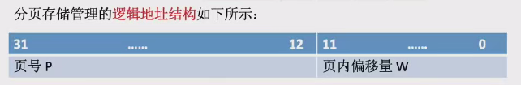

基本分页存储管理概念
- 分页存储管理
- 将内存空间划分为多个大小相等的区域叫做页框/页帧/物理块/物理页面
- 将进程的逻辑地址空间划分为与页框大小相等的一个个部分，称为页面/页
- 页面和页框之间存在一一映射的关系
- 操作系统以页框为单位为各个进程分配内存空间
- 页表
- 操作系统为每个进程建立一张页表，用于记录进程的各个页面和实际存放的内存块之间的映射关系
- 页表存放在进程的控制块（PCB）中
- 页表项包含页号和块号两个数据，其中块号对应内存中的页框号
- 页号不占用存储空间（连续存储的，所以不需要存下标），通过页表在内存中的起始地址和页号计算页表项的地址
- 逻辑地址到物理地址的转换
- 逻辑地址转换到物理地址的过程包括确定页号和页内偏移量
- 通过页号查询页表，找到页面在内存中的起始地址，再加上页内偏移量得到物理地址
- 页号 = 逻辑地址/页面长度（取除法的整数部分）
- 页内偏移量=逻辑地址 % 页面长度
- 页面大小为2的整数次幂的优势
- 如果页面大小是2的整数次幂，计算机硬件将逻辑地址拆分为页号和页内偏移量的速度更快
- 
- 如果页号部分有 M 位， 那么说明最多允许有 2M 个页框, 如果页内偏移量有 N 位, 那么一个页框最多有 2N 个 B